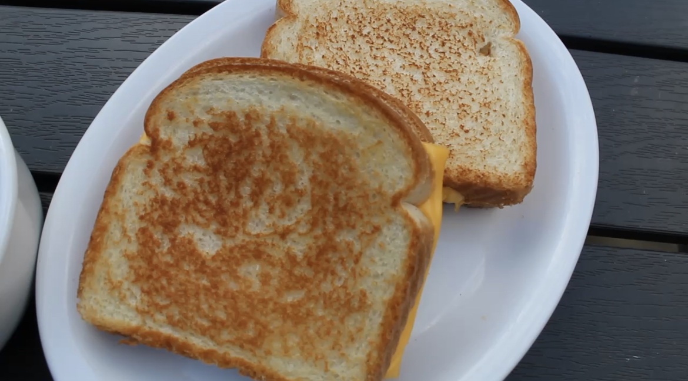
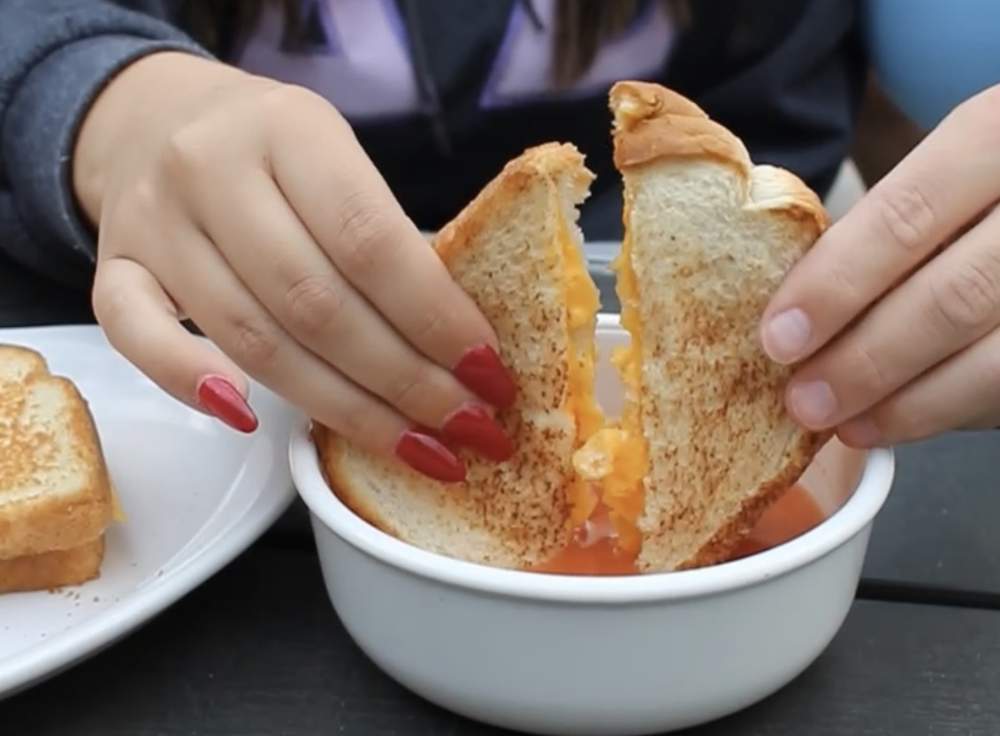
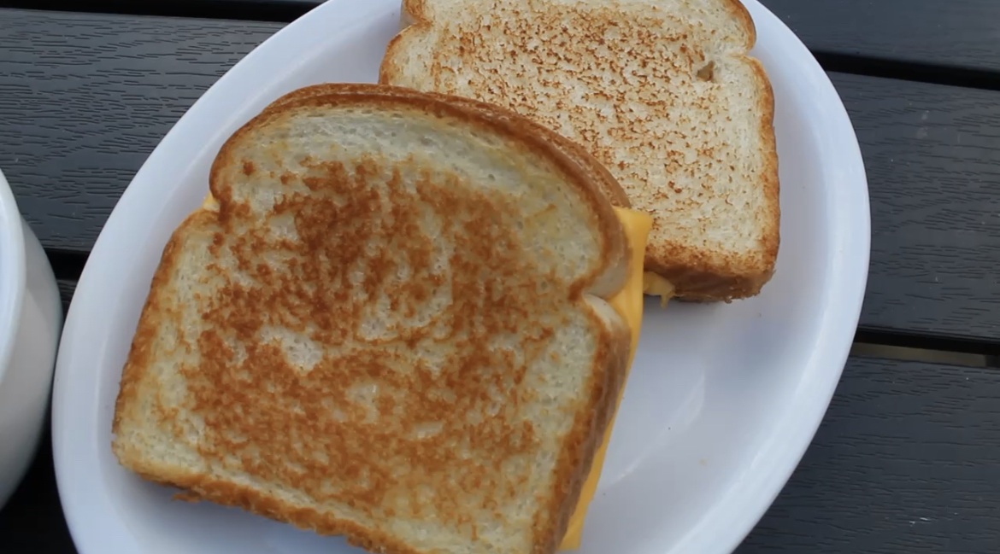
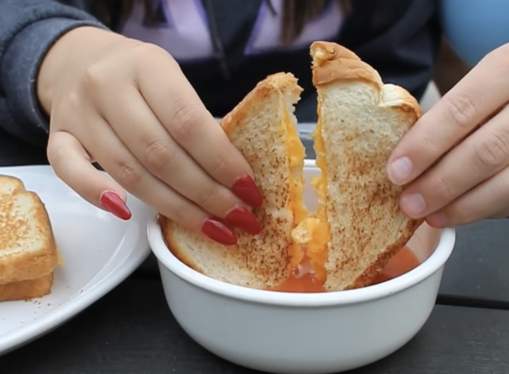
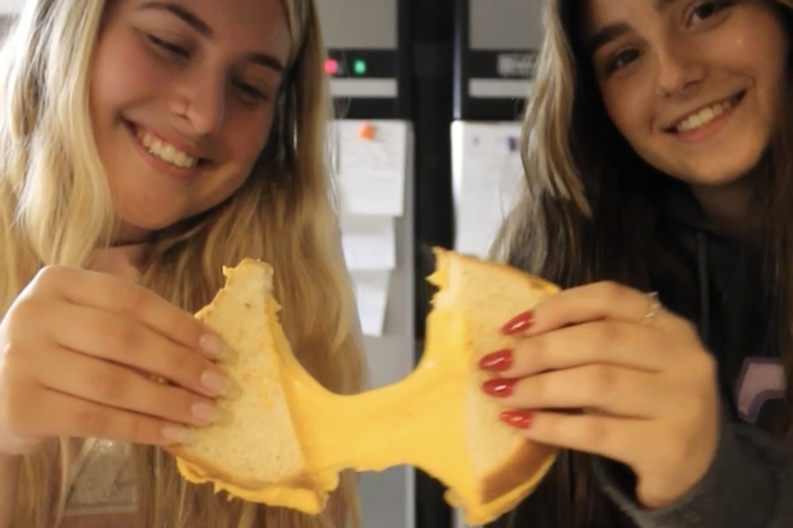

Food for Funds:2023
Food for Funds examines how food can be used as a fundraising tactic. Food for Funds specifically
examines the Grilled Cheesy with the Dee Zees event held by the Epsilon Omicron chapter
at Western Illinois University. In this philanthropy event, the Delta Zeta chapter held a
grilled cheese dinner where they raised money for the Starkey Hearing Foundation. Food for Funds
examines the research that led to the event, event logistics, and event success.
 Grilled cheese sandwiches, born out of necessity during
the Great Depression, can be altered into gourmet dishes!

Grilled cheese sandwiches, born out of necessity during
the Great Depression, can be altered into gourmet dishes!

A look into popular grilled cheese recipes inspired by celebrity chefs!

How to build a successful food-based philanthropy event. A look into the grilled cheese philanthropy event held by Delta Zeta also known as "The Dee Zees"

The journey of making a philanthropy event accessible for everyone. A look into how we paid attention to all forms of accessibility.

How Delta Zeta included the community of Western Illinois University and Macomb, Illinois in their philanthropy event.

How a female resturant owner empowers Delta Zeta in their philanthropy event.

The success of the grilled cheese philanthropy event and how much money we raised through a food fundraiser.

An in depth overview of the Food for Funds : A Grilled Cheese Philanthropy Project